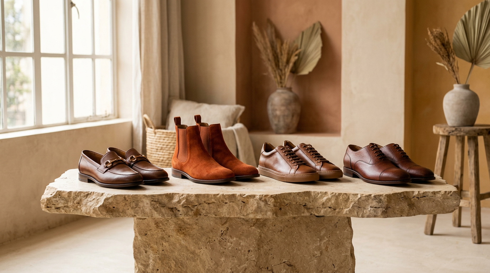

Considered
A focused edit over an endless scroll.
Since 2018 · Nairobi
We believe the best shoes earn their place by making everyday movement feel a little more like your own.

Our point of view
Jonaj's Shoe Palace began with a simple question: what makes a pair worth reaching for every morning? We look for honest materials, memorable silhouettes, and the comfort to carry you further.
Our edit is intentionally small. Every style is chosen for real life in Nairobi — the quick commute, the long lunch, the road out of town — and each one is checked by hand before it reaches you.
Explore the collection ↗What we stand for
A focused edit over an endless scroll.
Beautiful pairs that work hard in the real world.
Personal service, local knowledge, easy delivery.